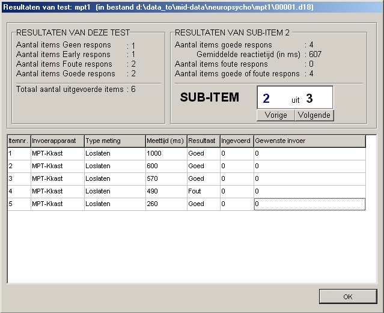
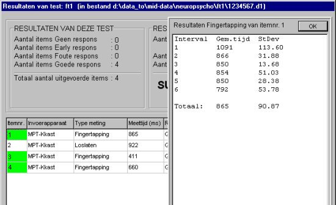

|
Het resultaat van een afgenomen test bekijken
INHOUDSOPGAVE
Starten
vanuit de ID-Testorganizer
Startvenster
Extra
infovenster bij MPT-fingertapping
Dit
onderdeel verlaten
Informatie
over het resultaatbestand
Starten
vanuit de ID-Testorganizer 
Onderdelen van de module NeuroPsychologische
Testen, dus ook het onderdeel
Resultaat van een afgenomen test bekijken,
worden altijd gestart vanuit de ID-Testorganizer.
Starten vanuit de ID-Testorganizer
gaat als volgt:
Kies eerst een patiëntnaam.
Dubbelklik in het vak met de reeds
uitgevoerde en nog geplande testen op de regel met de gewenste uitgevoerde
test (of selecteer eerst de regel met de gewenste test en klik vervolgens
op de knop Bekijken).
Onderstaand venster wordt zichtbaar
na starten van dit onderdeel.
In de kop van het venster staat
het volledige pad plus bestandsnaam van het resultaatbestand, dat nu wordt
bekeken.

VAK: RESULTATEN VAN DEZE
TEST
Hierin staat de totaal-beoordeling
van de test.
Aantal items Geen respons (deze
beoordeling betekent: bij minstens 1 sub-item werd Geen respons geconstateerd).
Aantal items Early respons (deze
beoordeling betekent: bij minstens 1 sub-item werd een Early respons geconstateerd).
Aantal items Foute respons (deze
beoordeling betekent: bij minstens 1 sub-item werd een Foute respons geconstateerd).
Aantal items Goede respons (deze
beoordeling betekent: bij alle sub-items werd een Goede respons geconstateerd).
Totaal aantal uitgevoerde items:
alle uitgevoerde items in deze test.
VAK: RESULTATEN VAN SUB-ITEM
<sub-itemnummer>
Hierin staat de beoordeling van
één sub-item van alle items in een test. Een sub-item verwijst
naar een invoer-object in een item.
Hier worden dus de resultaten bepaald
van bijv. het eerste invoer-object van alle items in een test.
Het sub-itemnummer kan worden ingesteld
met de knoppen vorige en volgende.
De volgende gegevens worden berekend
en weergegeven:
Aantal items goede respons en de
bijbehorende gemiddelde reactietijd (in milliseconde)
Aantal items foute respons
Aantal items goede of foute respons
2e VAK: RESULTATEN VAN
SUB-ITEM <sub-itemnummer>
In tabelvorm staan in het onderste
witte vak de resultaten van alle uitgevoerde items bij het geselecteerde
sub-item..
Uitleg van de kolommen in de tabel:
Itemnr.
Volgnummer van het uitgevoerde item.
Invoerapparaat
Apparaat dat voor de invoer werd
gebruikt. Bijvoorbeeld: keyboard (toetsenbord) of muis.
Wanneer een item geen invoerapparaat
bevat, dan wordt hier "Geen" vermeld.
Type meting
Het soort meting bij het invoerapparaat.
Bij invoerapparaat Keyboard: Reactietijd
òf Tekstinvoer.
Bij invoerapparaat Muis: Reactietijd
òf Reactietijd + Muisdoel
Bij invoerapparaat MPT-KKast: Reactietijd
Meettijd
(ms)
De reactietijd in milliseconden.
Wanneer geen responstijd bekend is wordt er vermeld: Geen respons.
Resultaat
Typering van de uitkomst van de
uitgevoerde item: Goed, Fout, Early of Geen.
Ingevoerd
De ingevoerde toets of muisknop.
Gew. invoer
De gewenste invoer van de betreffende
item.
Bij invoerapparaat toetsenbord kunnen
hier meerdere toetsen staan. De eerste is de gewenste toets, de overige
zijn de toegestane toetsen.
Extra
infovenster bij MPT-fingertapping 
Tijdens een MPT-fingertappingmeting
worden veel resultaten opgeslagen. Het betreft de gemiddelde tussen-toetstijd
en standaard deviatie over alle meting-intervallen en over de gehele meting.
De presentatie van deze gegevens bij Bekijken wijkt af van die van andere
type metingen.
Bij een fingertapping-meting staat
de volgende informatie in het overzicht:
- in kolom Invoerapparaat staat
MPT-Kkast
- in kolom Type meting staat Fingertapping
- in kolom Meettijd staat de gemiddelde
tussentoetstijd over de gehele meting.
- in kolom Resultaat staat altijd
Goed
- in kolom Gewenste invoer staat
het nummer van de knop op de MPT-Knoppenkast die ingedrukt moest worden
- in kolom Ingevoerd staan alle
resultaten, gescheiden door komma's (Gem. tijd en SD over interval
1, Gem. tijd en SD over interval 2, ..., Gem. tijd en SD over de
gehele meting).
Detailinformatie over de fingertappingmeting
wordt getoond in een extra infovenster na muisklikken in kolom Itemnr.
op de gewenste regel in de tabel met resultaten. Deze tabelcellen zijn
ter indicatie groen gekleurd. Onderstaand venster wordt dan zichtbaar.
Het venster verdwijnt weer na klikken
op de knop Ok.

Dit
onderdeel verlaten 
Klik met de muis op knop Ok.
Informatie
over het resultaatbestand 
In de kop van bovenstaand venster
staat de volledige locatie plus bestandsnaam van het resultaatbestand behorend
bij de geselecteerde afgenomen test.
Dit bestand heeft de vorm van een
INI-tekstbestand en kan indien gewenst met kladblok worden bekeken.
!! WAARSCHUWING
!!
Het bestand
mag niet worden gewijzigd, want wordt daardoor mogelijk onbruikbaar voor
verdere verwerking.
Het formaat
van dit bestand kan worden gewijzigd wanneer dat noodzakelijk is voor toekomstige
uitbreidingen van het programma.
Klik
op deze regel voor meer informatie over de opbouw van een resultaatbestand.